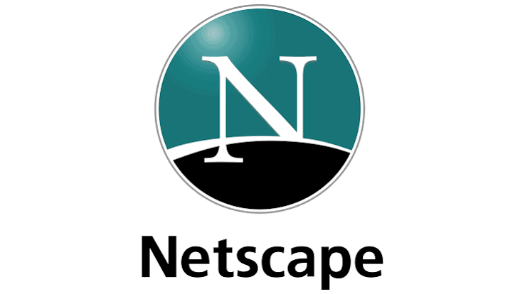
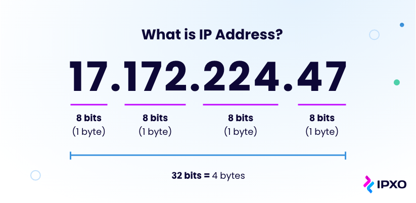

ARPANET gjordes klart år 1969 i USA och användes enbart till att utveckla en decentraliserad datapaketteknik som kunde skydda landet bättre. ARPANET är viktigt för internets historia eftersom det funkade som föregångaren till dagens globala internet.
World Wide Web skapades den 12 mars år 1989 av Tim Berners-Lee, en engelsman född den 8 juni 1955 i London, England. Jämsides med World Wide Web så skapade han HTML, URL-systemet och HTTP. Innan World Wide Web skapades så fanns det nästan inga system för att länka till och mellan saker och samordningen saknades helt.
Den allra första webbplatsen lanseras 1991 för forskningscentrumet CERN i Schweiz. Den var enkel och textbaserad. Den förklarade vad World Wide Web var och hur man använde hypertext och länkade vidare till andra sidor. Målet var att hjälpa forskare att dela information med varandra.
Den första stora och kommersiellt framgångsrika webbläsaren som nådde den stora allmänheten var Netscape (senare känd som Netscape Navigator) som lanserades 1994. Genom att introducera banbrytande teknologier förvandlade Netscape webben från ett textbaserat forskningsverktyg till en visuell och interaktiv plattform för allmänheten

En IP-adress är en unik nummerserie som identifierar en enhet (som en dator eller telefon) på internet eller ett nätverk, ungefär som en digital hemadress. DNS står för Domain Name System (domännamnssystemet) och fungerar som internets telefonbok.

Sveriges första hemsida publicerades 1993 av Per Hedbor. Sidan handlade om föreningen Lysator och vad de gjorde, det fanns presentationer om föreningens medlemmar och allt som fanns att veta om datorföreningens projekt och aktiviteter. Sidan finns kvar ännu idag.